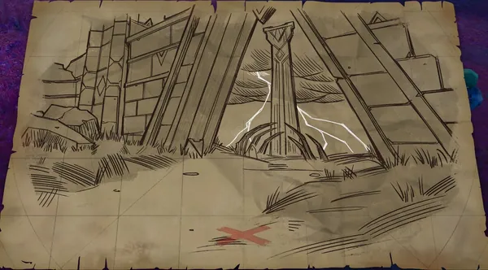
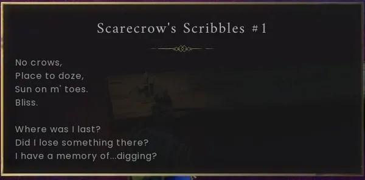
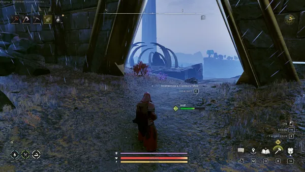
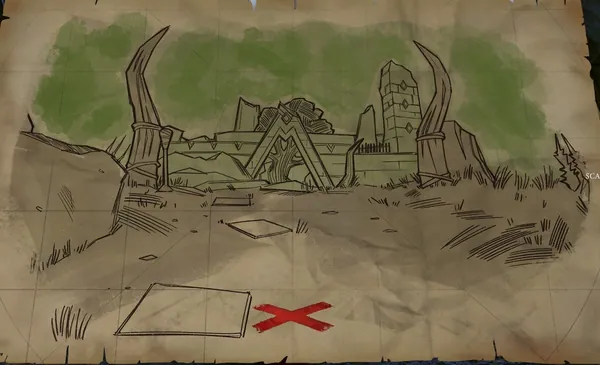
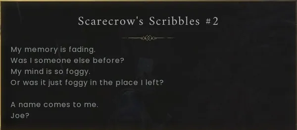
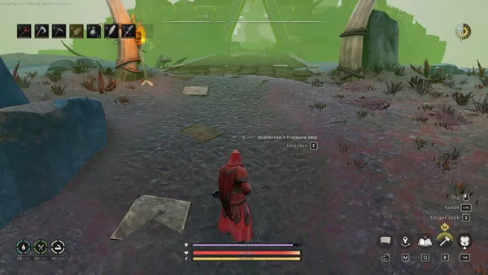
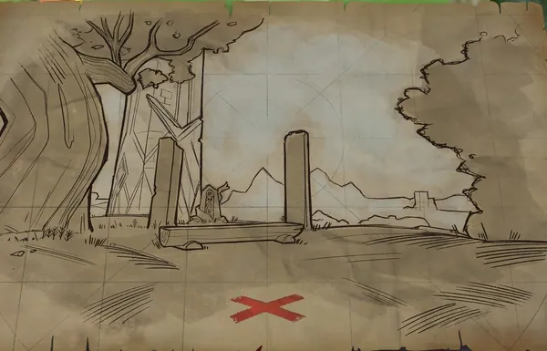
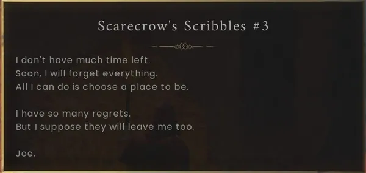
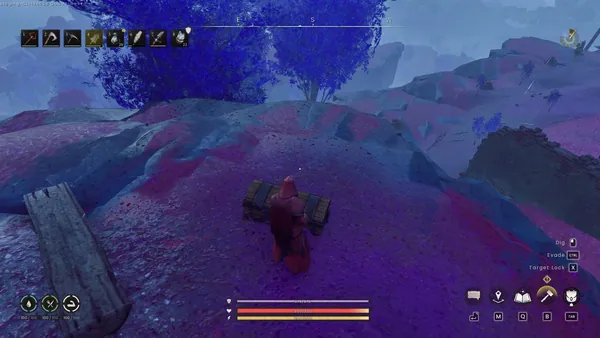
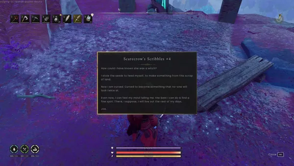

Scarecrow scavenging is an in-game activity that has you scavenging through Ghornfell using a map to locate hidden treasures. To start this activity, you must speak to the scarecrow and retrieve their scarecrow's key. The scarecrow can be found just south of the trisection of the river that acts as a border for the Fractured Plains and Stormtouched Highlands.
Location
Map Location 1:

Map Found at this Location:


Lore at this Location:


Map Location 2:


Map found at this location:


Lore at this Location:


Map Location 3:


Map at this location:


Lore at this location:


Treasure Location;


Lore at this location:


Reward
Trivia
- Despite not being a quest, the item, scarecrow's key has a secondary quest icon above it.
This guide is the wiki's Scarecrow Scavenging article, by its editors, reformatted for this site. Licensed CC BY-NC-SA 3.0.